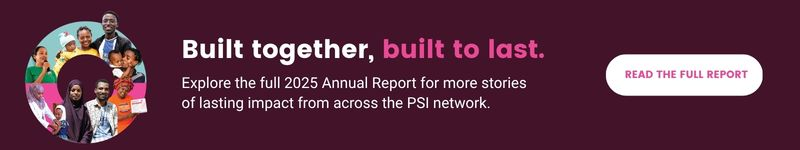
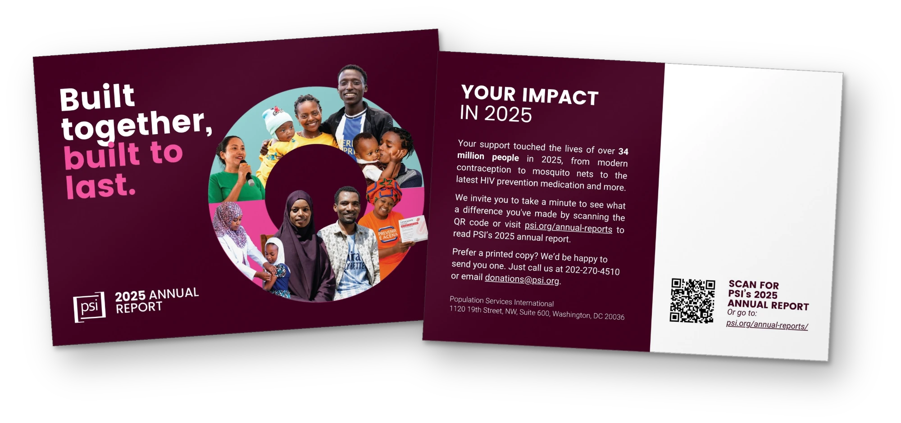

The challenge
2025 was a hard year for international development. The report had to show that the work kept going despite the setbacks, and that it was built to hold. It also had to reach people who never open a PDF.
Most annual reports get one moment: the launch email. I planned this one as the source for a full campaign, so the stories and numbers kept working long after release.
The idea
Resilience as the through line. I went back to PSI's 2024–2030 strategy and developed three title options grounded in it. The CEO selected Built Together, Built to Last. "Together" carries PSI's integrated approach across People & Communities, Markets and Health Systems; "Built to Last" carries the endurance.
I presented three cover concepts. The selected direction uses a deep shade of PSI pink to hold the weight of the year, with a circle of photographs of the people in the report. The composition does the work of saying resilience without writing it down.
One report, many pieces
I mapped each section of the report to a format that could stand on its own. Stories became blog posts and animations. The impact section became a numbers carousel. The top stories led the donor email. Each piece had one job and one action: go to the report.
The line had a fixed half and an open half: “…built to last” stayed, and each story filled in the first part, like Clean water, Malaria markets, Built through choice. Every team could say something true about its own work, and every piece still landed as one campaign.

The rollout
Rather than ask people to open a PDF, we led with the stories and matched each format to its audience. Blog posts for the public. A social series with story animations, an impact numbers carousel and videos for the clean water and reproductive health stories. A donor email leading with three stories. A printed card for donors who prefer mail. A leadership brief to carry the report inside PSI.

What came back
Longtime major donor